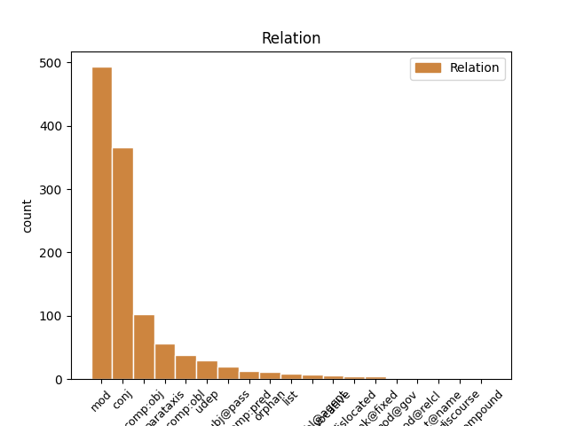
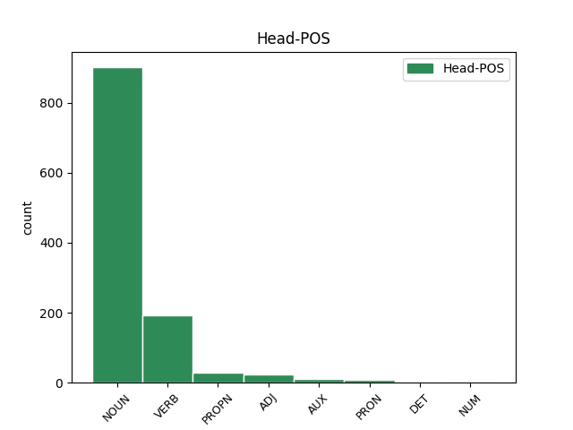
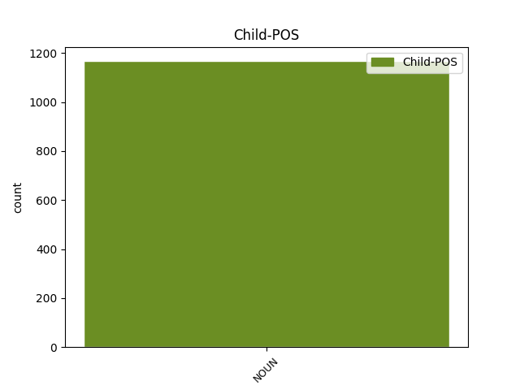

Distribution of features within this leaf



Agreement Rules sorted by frequency.
- When the dependent token is the modifer(mod) of the head token, and the head token is NOUN and the dependent token is NOUN.
1 Вот _ _ _ _ 0 _ _ _
2 разница разница NOUN _ Animacy=Inan|Case=Nom|Gender=Fem|Number=Sing 0 _ _ _
3 улиц улица NOUN _ Animacy=Inan|Case=Gen|Gender=Fem|Number=Plur 2 mod _ _
4 и _ _ _ _ 0 _ _ _
5 антуража _ _ _ _ 0 _ _ _
6 ! _ _ _ _ 0 _ _ _
1 Перед _ _ _ _ 0 _ _ _
2 сеансом _ _ _ _ 0 _ _ _
3 на _ _ _ _ 0 _ _ _
4 Гороховой _ _ _ _ 0 _ _ _
5 присели _ _ _ _ 0 _ _ _
6 у _ _ _ _ 0 _ _ _
7 раскрытого _ _ _ _ 0 _ _ _
8 окна _ _ _ _ 0 _ _ _
9 в _ _ _ _ 0 _ _ _
10 кофейном _ _ _ _ 0 _ _ _
11 кафе _ _ _ _ 0 _ _ _
12 , _ _ _ _ 0 _ _ _
13 заказали _ _ _ _ 0 _ _ _
14 фалафель фалафля NOUN _ Animacy=Inan|Case=Acc|Gender=Masc|Number=Sing 0 _ _ _
15 и _ _ _ _ 0 _ _ _
16 донер донер NOUN _ Animacy=Inan|Case=Acc|Gender=Masc|Number=Sing 14 conj _ SpaceAfter=No
17 , _ _ _ _ 0 _ _ _
18 стали _ _ _ _ 0 _ _ _
19 обсуждать _ _ _ _ 0 _ _ _
20 пиво _ _ _ _ 0 _ _ _
21 . _ _ _ _ 0 _ _ _
1 Осуществила Осуществить VERB _ Aspect=Perf|Gender=Fem|Mood=Ind|Number=Sing|Tense=Past|VerbForm=Fin|Voice=Act 0 _ _ _
2 давнюю _ _ _ _ 0 _ _ _
3 мечту мечта NOUN _ Animacy=Inan|Case=Acc|Gender=Fem|Number=Sing 1 comp:obj _ _
4 - _ _ _ _ 0 _ _ _
5 спела _ _ _ _ 0 _ _ _
6 Where _ _ _ _ 0 _ _ _
7 the _ _ _ _ 0 _ _ _
8 wild _ _ _ _ 0 _ _ _
9 roses _ _ _ _ 0 _ _ _
10 grow _ _ _ _ 0 _ _ _
11 , _ _ _ _ 0 _ _ _
12 на _ _ _ _ 0 _ _ _
13 два _ _ _ _ 0 _ _ _
14 голоса _ _ _ _ 0 _ _ _
15 с _ _ _ _ 0 _ _ _
16 луганчанином _ _ _ _ 0 _ _ _
17 - _ _ _ _ 0 _ _ _
18 и _ _ _ _ 0 _ _ _
19 - _ _ _ _ 0 _ _ _
20 айос-евангелистом _ _ _ _ 0 _ _ _
21 Лешей _ _ _ _ 0 _ _ _
22 . _ _ _ _ 0 _ _ _
1 Мы _ _ _ _ 0 _ _ _
2 съели _ _ _ _ 0 _ _ _
3 3 _ _ _ _ 0 _ _ _
4 стейка _ _ _ _ 0 _ _ _
5 с _ _ _ _ 0 _ _ _
6 пивом _ _ _ _ 0 _ _ _
7 ( _ _ _ _ 0 _ _ _
8 мальчики _ _ _ _ 0 _ _ _
9 ) _ _ _ _ 0 _ _ _
10 и _ _ _ _ 0 _ _ _
11 содой сода NOUN _ Animacy=Inan|Case=Ins|Gender=Fem|Number=Sing 0 _ _ _
12 ( _ _ _ _ 0 _ _ _
13 девочка девочка NOUN _ Animacy=Anim|Case=Nom|Gender=Fem|Number=Sing 11 parataxis _ SpaceAfter=No
14 ) _ _ _ _ 0 _ _ _
15 . _ _ _ _ 0 _ _ _
1 С _ _ _ _ 0 _ _ _
2 лица _ _ _ _ 0 _ _ _
3 земли _ _ _ _ 0 _ _ _
4 сметен смести VERB VERB Aspect=Perf|Gender=Masc|Number=Sing|Tense=Past|Variant=Short|VerbForm=Part|Voice=Pass 0 _ _ _
5 последний _ _ _ _ 0 _ _ _
6 снег снег NOUN NOUN Animacy=Inan|Case=Nom|Gender=Masc|Number=Sing 4 subj@pass _ SpaceAfter=No
7 , _ _ _ _ 0 _ _ _
8 И _ _ _ _ 0 _ _ _
9 грач _ _ _ _ 0 _ _ _
10 в _ _ _ _ 0 _ _ _
11 таком _ _ _ _ 0 _ _ _
12 веселом _ _ _ _ 0 _ _ _
13 настроенье _ _ _ _ 0 _ _ _
14 , _ _ _ _ 0 _ _ _
15 Как _ _ _ _ 0 _ _ _
16 будто _ _ _ _ 0 _ _ _
17 он _ _ _ _ 0 _ _ _
18 не _ _ _ _ 0 _ _ _
19 грач _ _ _ _ 0 _ _ _
20 , _ _ _ _ 0 _ _ _
21 а _ _ _ _ 0 _ _ _
22 человек _ _ _ _ 0 _ _ _
23 И _ _ _ _ 0 _ _ _
24 сочинил _ _ _ _ 0 _ _ _
25 сейчас _ _ _ _ 0 _ _ _
26 стихотворенье _ _ _ _ 0 _ _ _
27 . _ _ _ _ 0 _ _ _
1 Восторгом восторг NOUN _ Animacy=Inan|Case=Ins|Gender=Masc|Number=Sing 4 comp:obl _ _
2 взор _ _ _ _ 0 _ _ _
3 еще _ _ _ _ 0 _ _ _
4 горел гореть VERB _ Aspect=Imp|Gender=Masc|Mood=Ind|Number=Sing|Tense=Past|VerbForm=Fin|Voice=Act 0 _ _ _
5 ; _ _ _ _ 0 _ _ _
1 Гиганты _ _ _ _ 0 _ _ _
2 Возрожденья _ _ _ _ 0 _ _ _
3 Михайло михайло PROPN PROPN Animacy=Anim|Case=Nom|Gender=Masc|Number=Sing 0 _ _ _
4 Ангел _ _ _ _ 0 _ _ _
5 и _ _ _ _ 0 _ _ _
6 львокрепкий _ _ _ _ 0 _ _ _
7 бородач бородача NOUN NOUN Animacy=Anim|Case=Nom|Gender=Masc|Number=Sing 3 conj _ _
8 из _ _ _ _ 0 _ _ _
9 Винчи _ _ _ _ 0 _ _ _
10 Творили _ _ _ _ 0 _ _ _
11 красками _ _ _ _ 0 _ _ _
12 и _ _ _ _ 0 _ _ _
13 углем _ _ _ _ 0 _ _ _
14 чудо _ _ _ _ 0 _ _ _
15 : _ _ _ _ 0 _ _ _
16 На _ _ _ _ 0 _ _ _
17 плоском _ _ _ _ 0 _ _ _
18 углубляли _ _ _ _ 0 _ _ _
19 мир _ _ _ _ 0 _ _ _
20 , _ _ _ _ 0 _ _ _
21 Лепили _ _ _ _ 0 _ _ _
22 тело _ _ _ _ 0 _ _ _
23 в _ _ _ _ 0 _ _ _
24 воздухе _ _ _ _ 0 _ _ _
25 пространном _ _ _ _ 0 _ _ _
26 . _ _ _ _ 0 _ _ _
1 У _ _ _ _ 0 _ _ _
2 Революции _ _ _ _ 0 _ _ _
3 в _ _ _ _ 0 _ _ _
4 глазах _ _ _ _ 0 _ _ _
5 читаю _ _ _ _ 0 _ _ _
6 синих _ _ _ _ 0 _ _ _
7 Необходимость _ _ _ _ 0 _ _ _
8 беспощадных _ _ _ _ 0 _ _ _
9 мер _ _ _ _ 0 _ _ _
10 СССР _ _ _ _ 0 _ _ _
11 [ _ _ _ _ 0 _ _ _
12 эсесесер _ _ _ _ 0 _ _ _
13 ] _ _ _ _ 0 _ _ _
14 СССР _ _ _ _ 0 _ _ _
15 [ _ _ _ _ 0 _ _ _
16 эсесесер _ _ _ _ 0 _ _ _
17 ] _ _ _ _ 0 _ _ _
18 СССР _ _ _ _ 0 _ _ _
19 [ _ _ _ _ 0 _ _ _
20 эсесесер _ _ _ _ 0 _ _ _
21 ] _ _ _ _ 0 _ _ _
22 СССР СССР PROPN NOUN Animacy=Inan|Case=Gen|Gender=Masc|Number=Sing 0 _ _ _
23 [ _ _ _ _ 0 _ _ _
24 эсесесер эсесесер NOUN NOUN Animacy=Inan|Case=Gen|Gender=Masc|Number=Sing 22 parataxis _ SpaceAfter=No
25 ] _ _ _ _ 0 _ _ _
26 . _ _ _ _ 0 _ _ _
1 Это _ _ _ _ 0 _ _ _
2 Харьков _ _ _ _ 0 _ _ _
3 такой _ _ _ _ 0 _ _ _
4 тусовочный _ _ _ _ 0 _ _ _
5 ( _ _ _ _ 0 _ _ _
6 я _ _ _ _ 0 _ _ _
7 замечу _ _ _ _ 0 _ _ _
8 отдельно _ _ _ _ 0 _ _ _
9 , _ _ _ _ 0 _ _ _
10 что _ _ _ _ 0 _ _ _
11 в _ _ _ _ 0 _ _ _
12 половине _ _ _ _ 0 _ _ _
13 четвертого _ _ _ _ 0 _ _ _
14 утра _ _ _ _ 0 _ _ _
15 мы _ _ _ _ 0 _ _ _
16 уходили _ _ _ _ 0 _ _ _
17 первыми _ _ _ _ 0 _ _ _
18 , _ _ _ _ 0 _ _ _
19 и _ _ _ _ 0 _ _ _
20 это _ _ _ _ 0 _ _ _
21 был быть AUX _ Aspect=Imp|Gender=Masc|Mood=Ind|Number=Sing|Tense=Past|VerbForm=Fin|Voice=Act 0 _ _ _
22 четверг четверг NOUN _ Animacy=Anim|Case=Nom|Gender=Masc|Number=Sing 21 comp:pred _ SpaceAfter=No
23 ! _ _ _ _ 0 _ _ _
24 ) _ _ _ _ 0 _ _ _
25 . _ _ _ _ 0 _ _ _
1 Хозяйке хозяйка NOUN _ Animacy=Anim|Case=Dat|Gender=Fem|Number=Sing 3 orphan _ _
2 на _ _ _ _ 0 _ _ _
3 заметку заметка NOUN _ Animacy=Inan|Case=Acc|Gender=Fem|Number=Sing 0 _ _ _
4 . _ _ _ _ 0 _ _ _
5 #фэшн _ _ _ _ 0 _ _ _
1 девочка _ _ _ _ 0 _ _ _
2 тоже _ _ _ _ 0 _ _ _
3 говорит _ _ _ _ 0 _ _ _
4 а _ _ _ _ 0 _ _ _
5 лен _ _ _ _ 0 _ _ _
6 -- _ _ _ _ 0 _ _ _
7 ты _ _ _ _ 0 _ _ _
8 дан _ _ _ _ 0 _ _ _
9 – _ _ _ _ 0 _ _ _
10 ты _ _ _ _ 0 _ _ _
11 бур _ _ _ _ 0 _ _ _
12 забор _ _ _ _ 0 _ _ _
13 лови _ _ _ _ 0 _ _ _
14 хоро _ _ _ _ 0 _ _ _
15 -- _ _ _ _ 0 _ _ _
16 ший _ _ _ _ 0 _ _ _
17 пе _ _ _ _ 0 _ _ _
18 -- _ _ _ _ 0 _ _ _
19 реход _ _ _ _ 0 _ _ _
20 твоя _ _ _ _ 0 _ _ _
21 колода _ _ _ _ 0 _ _ _
22 пе _ _ _ _ 0 _ _ _
23 -- _ _ _ _ 0 _ _ _
24 региб _ _ _ _ 0 _ _ _
25 а _ _ _ _ 0 _ _ _
26 па _ _ _ _ 0 _ _ _
27 -- _ _ _ _ 0 _ _ _
28 рахода _ _ _ _ 0 _ _ _
29 са сапог NOUN _ Animacy=Inan|Case=Nom|Gender=Masc|Number=Plur 0 _ _ _
30 -- _ _ _ _ 0 _ _ _
31 поги goeswith NOUN NOUN Animacy=Inan|Case=Nom|Gender=Masc|Number=Plur 29 list _ _
1 Я _ _ _ _ 0 _ _ _
2 собственной _ _ _ _ 0 _ _ _
3 томился _ _ _ _ 0 _ _ _
4 теснотой _ _ _ _ 0 _ _ _
5 , _ _ _ _ 0 _ _ _
6 Хотя _ _ _ _ 0 _ _ _
7 и _ _ _ _ 0 _ _ _
8 раздвигался _ _ _ _ 0 _ _ _
9 , _ _ _ _ 0 _ _ _
10 будто _ _ _ _ 0 _ _ _
11 город _ _ _ _ 0 _ _ _
12 , _ _ _ _ 0 _ _ _
13 И _ _ _ _ 0 _ _ _
14 слободами слобода NOUN NOUN Animacy=Inan|Case=Ins|Gender=Masc|Number=Plur 15 udep _ _
15 громоздился громоздиться VERB VERB Aspect=Imp|Gender=Masc|Mood=Ind|Number=Sing|Tense=Past|VerbForm=Fin|Voice=Mid 0 _ _ _
16 . _ _ _ _ 0 _ _ _
1 могучий _ _ _ _ 0 _ _ _
2 панцырь панцырь NOUN NOUN Animacy=Anim|Case=Nom|Gender=Masc|Number=Sing 3 subj@pass _ _
3 был быть AUX VERB Aspect=Imp|Gender=Masc|Mood=Ind|Number=Sing|Tense=Past|VerbForm=Fin|Voice=Act 0 _ _ _
4 утыкан _ _ _ _ 0 _ _ _
5 шмелями _ _ _ _ 0 _ _ _
6 плавунами _ _ _ _ 0 _ _ _
7 и _ _ _ _ 0 _ _ _
8 львами _ _ _ _ 0 _ _ _
1 Ведь _ _ _ _ 0 _ _ _
2 Цыганов _ _ _ _ 0 _ _ _
3 мне _ _ _ _ 0 _ _ _
4 так _ _ _ _ 0 _ _ _
5 нравится _ _ _ _ 0 _ _ _
6 , _ _ _ _ 0 _ _ _
7 он _ _ _ _ 0 _ _ _
8 мрачный _ _ _ _ 0 _ _ _
9 , _ _ _ _ 0 _ _ _
10 гипермногодетный гипермногодетный ADJ _ Case=Nom|Degree=Pos|Gender=Masc|Number=Sing 0 _ _ _
11 , _ _ _ _ 0 _ _ _
12 и _ _ _ _ 0 _ _ _
13 то _ _ _ _ 0 _ _ _
14 ли _ _ _ _ 0 _ _ _
15 подлец подлец NOUN _ Animacy=Anim|Case=Nom|Gender=Masc|Number=Sing 10 conj _ SpaceAfter=No
16 , _ _ _ _ 0 _ _ _
17 то _ _ _ _ 0 _ _ _
18 ли _ _ _ _ 0 _ _ _
19 просто _ _ _ _ 0 _ _ _
20 бабник _ _ _ _ 0 _ _ _
21 . _ _ _ _ 0 _ _ _
1 С _ _ _ _ 0 _ _ _
2 тех _ _ _ _ 0 _ _ _
3 пор _ _ _ _ 0 _ _ _
4 я _ _ _ _ 0 _ _ _
5 вышел _ _ _ _ 0 _ _ _
6 из _ _ _ _ 0 _ _ _
7 пеленок _ _ _ _ 0 _ _ _
8 , _ _ _ _ 0 _ _ _
9 Между _ _ _ _ 0 _ _ _
10 мужами _ _ _ _ 0 _ _ _
11 возмужал возмужать VERB VERB Aspect=Perf|Gender=Masc|Mood=Ind|Number=Sing|Tense=Past|VerbForm=Fin|Voice=Act 0 _ _ _
12 , _ _ _ _ 0 _ _ _
13 Но _ _ _ _ 0 _ _ _
14 для _ _ _ _ 0 _ _ _
15 него _ _ _ _ 0 _ _ _
16 еще _ _ _ _ 0 _ _ _
17 ребенок ребенок NOUN NOUN Animacy=Anim|Case=Nom|Gender=Masc|Number=Sing 11 conj _ SpaceAfter=No
18 . _ _ _ _ 0 _ _ _
1 Традиционалист традиционалист NOUN NOUN Animacy=Anim|Case=Nom|Gender=Masc|Number=Sing 2 dislocated _ _
2 Он он PRON PRON Case=Nom|Gender=Masc|Number=Sing|Person=3 0 _ _ _
3 почитает _ _ _ _ 0 _ _ _
4 вас _ _ _ _ 0 _ _ _
5 Добрейшим _ _ _ _ 0 _ _ _
6 из _ _ _ _ 0 _ _ _
7 царей _ _ _ _ 0 _ _ _
1 Оно _ _ _ _ 0 _ _ _
2 шумит _ _ _ _ 0 _ _ _
3 перед _ _ _ _ 0 _ _ _
4 скалой _ _ _ _ 0 _ _ _
5 Левкада _ _ _ _ 0 _ _ _
6 , _ _ _ _ 0 _ _ _
7 На _ _ _ _ 0 _ _ _
8 ней _ _ _ _ 0 _ _ _
9 певец _ _ _ _ 0 _ _ _
10 , _ _ _ _ 0 _ _ _
11 мятежной _ _ _ _ 0 _ _ _
12 думы _ _ _ _ 0 _ _ _
13 полн _ _ _ _ 0 _ _ _
14 , _ _ _ _ 0 _ _ _
15 Стоит _ _ _ _ 0 _ _ _
16 ... _ _ _ _ 0 _ _ _
17 в _ _ _ _ 0 _ _ _
18 очах _ _ _ _ 0 _ _ _
19 блеснула блеснуть VERB VERB Aspect=Perf|Gender=Fem|Mood=Ind|Number=Sing|Tense=Past|VerbForm=Fin|Voice=Act 0 _ _ _
20 вдруг _ _ _ _ 0 _ _ _
21 отрада _ _ _ _ 0 _ _ _
22 : _ _ _ _ 0 _ _ _
23 Сия _ _ _ _ 0 _ _ _
24 скала скала NOUN NOUN Animacy=Inan|Case=Nom|Gender=Fem|Number=Sing 19 parataxis _ SpaceAfter=No
25 ... _ _ _ _ 0 _ _ _
26 тень _ _ _ _ 0 _ _ _
27 Сафо _ _ _ _ 0 _ _ _
28 !.. _ _ _ _ 0 _ _ _
29 голос _ _ _ _ 0 _ _ _
30 волн _ _ _ _ 0 _ _ _
31 ... _ _ _ _ 0 _ _ _
1 Например _ _ _ _ 0 _ _ _
2 , _ _ _ _ 0 _ _ _
3 можно _ _ _ _ 0 _ _ _
4 чуть _ _ _ _ 0 _ _ _
5 более _ _ _ _ 0 _ _ _
6 сильным _ _ _ _ 0 _ _ _
7 нажатием _ _ _ _ 0 _ _ _
8 можно _ _ _ _ 0 _ _ _
9 разблокировать _ _ _ _ 0 _ _ _
10 смартфон _ _ _ _ 0 _ _ _
11 или _ _ _ _ 0 _ _ _
12 добавить _ _ _ _ 0 _ _ _
13 в _ _ _ _ 0 _ _ _
14 интерфейс _ _ _ _ 0 _ _ _
15 устройства _ _ _ _ 0 _ _ _
16 дополнительные _ _ _ _ 0 _ _ _
17 команды _ _ _ _ 0 _ _ _
18 , _ _ _ _ 0 _ _ _
19 аналогичные _ _ _ _ 0 _ _ _
20 нажатию _ _ _ _ 0 _ _ _
21 правой _ _ _ _ 0 _ _ _
22 кнопки кнопка NOUN _ Animacy=Inan|Case=Gen|Gender=Fem|Number=Sing 0 _ _ _
23 мыши мышь NOUN _ Animacy=Inan|Case=Gen|Gender=Fem|Number=Sing 22 udep _ SpaceAfter=No
24 . _ _ _ _ 0 _ _ _
1 он _ _ _ _ 0 _ _ _
2 вдруг _ _ _ _ 0 _ _ _
3 затосковал _ _ _ _ 0 _ _ _
4 о _ _ _ _ 0 _ _ _
5 точке _ _ _ _ 0 _ _ _
6 он _ _ _ _ 0 _ _ _
7 вдруг _ _ _ _ 0 _ _ _
8 закуковал _ _ _ _ 0 _ _ _
9 о _ _ _ _ 0 _ _ _
10 Риме _ _ _ _ 0 _ _ _
11 и _ _ _ _ 0 _ _ _
12 поглядите _ _ _ _ 0 _ _ _
13 стал _ _ _ _ 0 _ _ _
14 он _ _ _ _ 0 _ _ _
15 зримей _ _ _ _ 0 _ _ _
16 и _ _ _ _ 0 _ _ _
17 очутился _ _ _ _ 0 _ _ _
18 и _ _ _ _ 0 _ _ _
19 возник _ _ _ _ 0 _ _ _
20 он _ _ _ _ 0 _ _ _
21 был _ _ _ _ 0 _ _ _
22 мечом _ _ _ _ 0 _ _ _
23 он _ _ _ _ 0 _ _ _
24 стал стать VERB VERB Aspect=Perf|Gender=Masc|Mood=Ind|Number=Sing|Tense=Past|VerbForm=Fin|Voice=Act 0 _ _ _
25 родник родник NOUN NOUN Animacy=Inan|Case=Nom|Gender=Masc|Number=Sing 24 comp:pred _ _
1 ты _ _ _ _ 0 _ _ _
2 чего _ _ _ _ 0 _ _ _
3 , _ _ _ _ 0 _ _ _
4 сынок сынок NOUN NOUN Animacy=Anim|Case=Nom|Gender=Masc|Number=Sing 6 vocative _ SpaceAfter=No
5 , _ _ _ _ 0 _ _ _
6 задумал задумать VERB VERB Aspect=Perf|Gender=Masc|Mood=Ind|Number=Sing|Tense=Past|VerbForm=Fin|Voice=Act 0 _ _ _
7 ? _ _ _ _ 0 _ _ _
1 И _ _ _ _ 0 _ _ _
2 в _ _ _ _ 0 _ _ _
3 том тот DET _ Case=Loc|Gender=Neut|Number=Sing 0 _ _ _
4 числе число NOUN _ Animacy=Inan|Case=Loc|Gender=Neut|Number=Sing 3 unk@fixed _ _
5 в _ _ _ _ 0 _ _ _
6 антикоррупционный _ _ _ _ 0 _ _ _
7 комитет _ _ _ _ 0 _ _ _
8 ГД _ _ _ _ 0 _ _ _
1 Блиcтательно _ _ _ _ 0 _ _ _
2 вздымает _ _ _ _ 0 _ _ _
3 меcяц _ _ _ _ 0 _ _ _
4 новый новый ADJ ADJ Case=Nom|Degree=Pos|Gender=Masc|Number=Sing 0 _ _ _
5 над _ _ _ _ 0 _ _ _
6 гоpодом _ _ _ _ 0 _ _ _
7 cвой _ _ _ _ 0 _ _ _
8 одинокий _ _ _ _ 0 _ _ _
9 pог pог NOUN NOUN Animacy=Inan|Case=Acc|Gender=Masc|Number=Sing 4 comp:obj _ SpaceAfter=No
10 . _ _ _ _ 0 _ _ _
1 Угодничать _ _ _ _ 0 _ _ _
2 - _ _ _ _ 0 _ _ _
3 завистничать _ _ _ _ 0 _ _ _
4 перед _ _ _ _ 0 _ _ _
5 ловкачом _ _ _ _ 0 _ _ _
6 - _ _ _ _ 0 _ _ _
7 богатеем _ _ _ _ 0 _ _ _
8 , _ _ _ _ 0 _ _ _
9 -- _ _ _ _ 0 _ _ _
10 Этим _ _ _ _ 0 _ _ _
11 во _ _ _ _ 0 _ _ _
12 много _ _ _ _ 0 _ _ _
13 раз _ _ _ _ 0 _ _ _
14 лучше _ _ _ _ 0 _ _ _
15 меня _ _ _ _ 0 _ _ _
16 занимается _ _ _ _ 0 _ _ _
17 , _ _ _ _ 0 _ _ _
18 по _ _ _ _ 0 _ _ _
19 крайней крайний ADJ ADJ Case=Dat|Degree=Pos|Gender=Fem|Number=Sing 0 _ _ _
20 мере мера NOUN NOUN Animacy=Inan|Case=Dat|Gender=Fem|Number=Sing 19 unk@fixed _ SpaceAfter=No
21 , _ _ _ _ 0 _ _ _
22 полмира _ _ _ _ 0 _ _ _
23 ; _ _ _ _ 0 _ _ _
1 Он _ _ _ _ 0 _ _ _
2 тайну _ _ _ _ 0 _ _ _
3 любви _ _ _ _ 0 _ _ _
4 их _ _ _ _ 0 _ _ _
5 преступной _ _ _ _ 0 _ _ _
6 открыл _ _ _ _ 0 _ _ _
7 : _ _ _ _ 0 _ _ _
8 Беда беда NOUN NOUN Animacy=Inan|Case=Nom|Gender=Fem|Number=Sing 0 _ _ _
9 кабардинке кабардинка NOUN NOUN Animacy=Anim|Case=Dat|Gender=Fem|Number=Sing 8 comp:obl _ SpaceAfter=No
10 , _ _ _ _ 0 _ _ _
11 яуром _ _ _ _ 0 _ _ _
12 прельщенной _ _ _ _ 0 _ _ _
13 ! _ _ _ _ 0 _ _ _
1 Божок божок NOUN _ Animacy=Anim|Case=Nom|Gender=Masc|Number=Sing 3 parataxis _ SpaceAfter=No
2 , _ _ _ _ 0 _ _ _
3 он он PRON _ Case=Nom|Gender=Masc|Number=Sing|Person=3 0 _ _ _
4 хочет _ _ _ _ 0 _ _ _
5 винограда _ _ _ _ 0 _ _ _
6 — _ _ _ _ 0 _ _ _
7 не _ _ _ _ 0 _ _ _
8 может _ _ _ _ 0 _ _ _
9 есть _ _ _ _ 0 _ _ _
10 . _ _ _ _ 0 _ _ _
1 Когда _ _ _ _ 0 _ _ _
2 пользователь _ _ _ _ 0 _ _ _
3 нажимает _ _ _ _ 0 _ _ _
4 на _ _ _ _ 0 _ _ _
5 экран _ _ _ _ 0 _ _ _
6 или _ _ _ _ 0 _ _ _
7 сжимает _ _ _ _ 0 _ _ _
8 корпус _ _ _ _ 0 _ _ _
9 устройства _ _ _ _ 0 _ _ _
10 , _ _ _ _ 0 _ _ _
11 частота _ _ _ _ 0 _ _ _
12 воспринимаемого воспринимать VERB _ Aspect=Imp|Case=Gen|Gender=Masc|Number=Sing|Tense=Pres|VerbForm=Part|Voice=Pass 0 _ _ _
13 микрофоном микрофон NOUN _ Animacy=Inan|Case=Ins|Gender=Masc|Number=Sing 12 comp:obl@agent _ _
14 звука _ _ _ _ 0 _ _ _
15 изменяется _ _ _ _ 0 _ _ _
16 . _ _ _ _ 0 _ _ _
1 Лидер _ _ _ _ 0 _ _ _
2 " _ _ _ _ 0 _ _ _
3 Зеленых _ _ _ _ 0 _ _ _
4 " _ _ _ _ 0 _ _ _
5 подал _ _ _ _ 0 _ _ _
6 иск _ _ _ _ 0 _ _ _
7 против _ _ _ _ 0 _ _ _
8 Жириновского _ _ _ _ 0 _ _ _
9 на _ _ _ _ 0 _ _ _
10 1 _ _ _ _ 0 _ _ _
11 миллион миллион NOUN _ Animacy=Inan|Case=Acc|Gender=Masc|Number=Sing 12 mod@gov _ _
12 рублей рубль NOUN _ Animacy=Inan|Case=Gen|Gender=Masc|Number=Plur 0 _ _ _
1 4 _ _ _ _ 0 _ _ _
2 . _ _ _ _ 0 _ _ _
3 Получаешь _ _ _ _ 0 _ _ _
4 свои _ _ _ _ 0 _ _ _
5 20 _ _ _ _ 0 _ _ _
6 евро _ _ _ _ 0 _ _ _
7 на _ _ _ _ 0 _ _ _
8 счет _ _ _ _ 0 _ _ _
9 , _ _ _ _ 0 _ _ _
10 а _ _ _ _ 0 _ _ _
11 Павлик Павлик PROPN _ Animacy=Anim|Case=Nom|Gender=Masc|Number=Sing 0 _ _ _
12 — _ _ _ _ 0 _ _ _
13 бонус бонус NOUN _ Animacy=Inan|Case=Nom|Gender=Masc|Number=Sing 11 orphan _ _
14 за _ _ _ _ 0 _ _ _
15 приглашенного _ _ _ _ 0 _ _ _
16 друга _ _ _ _ 0 _ _ _
17 и _ _ _ _ 0 _ _ _
18 скидку _ _ _ _ 0 _ _ _
19 на _ _ _ _ 0 _ _ _
20 билет _ _ _ _ 0 _ _ _
21 в _ _ _ _ 0 _ _ _
22 Сомали _ _ _ _ 0 _ _ _
23 . _ _ _ _ 0 _ _ _
1 уже _ _ _ _ 0 _ _ _
2 ли _ _ _ _ 0 _ _ _
3 это _ _ _ _ 0 _ _ _
4 Ржев Ржев PROPN NOUN Animacy=Inan|Case=Nom|Gender=Masc|Number=Sing 0 _ _ _
5 поляк поляк NOUN NOUN Animacy=Anim|Case=Nom|Gender=Masc|Number=Sing 4 vocative _ _
6 и _ _ _ _ 0 _ _ _
7 три _ _ _ _ 0 _ _ _
8 домашние _ _ _ _ 0 _ _ _
9 клопа _ _ _ _ 0 _ _ _
1 это _ _ _ _ 0 _ _ _
2 -- _ _ _ _ 0 _ _ _
3 правда _ _ _ _ 0 _ _ _
4 синих _ _ _ _ 0 _ _ _
5 глаз _ _ _ _ 0 _ _ _
6 , _ _ _ _ 0 _ _ _
7 сестры _ _ _ _ 0 _ _ _
8 - _ _ _ _ 0 _ _ _
9 рыбы _ _ _ _ 0 _ _ _
10 льнут _ _ _ _ 0 _ _ _
11 к _ _ _ _ 0 _ _ _
12 оконцу _ _ _ _ 0 _ _ _
13 : _ _ _ _ 0 _ _ _
14 это _ _ _ _ 0 _ _ _
15 шелест шелест NOUN NOUN Animacy=Inan|Case=Nom|Gender=Masc|Number=Sing 16 subj@pass _ _
16 слышен слышный ADJ ADJ Degree=Pos|Gender=Masc|Number=Sing|Variant=Short 0 _ _ _
17 чей _ _ _ _ 0 _ _ _
18 ? _ _ _ _ 0 _ _ _
1 Ты _ _ _ _ 0 _ _ _
2 почему _ _ _ _ 0 _ _ _
3 бескрыл бескрылый ADJ ADJ Degree=Pos|Gender=Masc|Number=Sing|Variant=Short 0 _ _ _
4 , _ _ _ _ 0 _ _ _
5 старик старик NOUN NOUN Animacy=Anim|Case=Nom|Gender=Masc|Number=Sing 3 vocative _ SpaceAfter=No
6 , _ _ _ _ 0 _ _ _
7 до _ _ _ _ 0 _ _ _
8 сей _ _ _ _ 0 _ _ _
9 поры _ _ _ _ 0 _ _ _
10 ?.. _ _ _ _ 0 _ _ _
1 Гиганты _ _ _ _ 0 _ _ _
2 Возрожденья _ _ _ _ 0 _ _ _
3 Михайло михайло PROPN PROPN Animacy=Anim|Case=Nom|Gender=Masc|Number=Sing 0 _ _ _
4 Ангел ангел NOUN NOUN Animacy=Anim|Case=Nom|Gender=Masc|Number=Sing 3 flat@name _ _
5 и _ _ _ _ 0 _ _ _
6 львокрепкий _ _ _ _ 0 _ _ _
7 бородач _ _ _ _ 0 _ _ _
8 из _ _ _ _ 0 _ _ _
9 Винчи _ _ _ _ 0 _ _ _
10 Творили _ _ _ _ 0 _ _ _
11 красками _ _ _ _ 0 _ _ _
12 и _ _ _ _ 0 _ _ _
13 углем _ _ _ _ 0 _ _ _
14 чудо _ _ _ _ 0 _ _ _
15 : _ _ _ _ 0 _ _ _
16 На _ _ _ _ 0 _ _ _
17 плоском _ _ _ _ 0 _ _ _
18 углубляли _ _ _ _ 0 _ _ _
19 мир _ _ _ _ 0 _ _ _
20 , _ _ _ _ 0 _ _ _
21 Лепили _ _ _ _ 0 _ _ _
22 тело _ _ _ _ 0 _ _ _
23 в _ _ _ _ 0 _ _ _
24 воздухе _ _ _ _ 0 _ _ _
25 пространном _ _ _ _ 0 _ _ _
26 . _ _ _ _ 0 _ _ _
1 -- _ _ _ _ 0 _ _ _
2 Одна один NUM NUM Case=Nom|Gender=Fem|Number=Sing 0 _ _ _
3 , _ _ _ _ 0 _ _ _
4 а _ _ _ _ 0 _ _ _
5 завтра _ _ _ _ 0 _ _ _
6 две _ _ _ _ 0 _ _ _
7 -- _ _ _ _ 0 _ _ _
8 На _ _ _ _ 0 _ _ _
9 левом _ _ _ _ 0 _ _ _
10 рукаве _ _ _ _ 0 _ _ _
11 Нашивки _ _ _ _ 0 _ _ _
12 не _ _ _ _ 0 _ _ _
13 бесчесть бесчесть NOUN NOUN Animacy=Inan|Case=Nom|Gender=Fem|Number=Sing 2 parataxis _ SpaceAfter=No
14 ! _ _ _ _ 0 _ _ _
1 Когда _ _ _ _ 0 _ _ _
2 мы _ _ _ _ 0 _ _ _
3 сойдемся _ _ _ _ 0 _ _ _
4 за _ _ _ _ 0 _ _ _
5 круглым _ _ _ _ 0 _ _ _
6 столом стол NOUN NOUN Animacy=Inan|Case=Ins|Gender=Masc|Number=Sing 0 _ _ _
7 , _ _ _ _ 0 _ _ _
8 Который _ _ _ _ 0 _ _ _
9 для _ _ _ _ 0 _ _ _
10 дружества _ _ _ _ 0 _ _ _
11 тесен тесный NOUN NOUN Gender=Masc|Number=Sing|Variant=Short 6 mod@relcl _ SpaceAfter=No
12 , _ _ _ _ 0 _ _ _
13 И _ _ _ _ 0 _ _ _
14 светлую _ _ _ _ 0 _ _ _
15 пену _ _ _ _ 0 _ _ _
16 полнее _ _ _ _ 0 _ _ _
17 нальем _ _ _ _ 0 _ _ _
18 Под _ _ _ _ 0 _ _ _
19 гул _ _ _ _ 0 _ _ _
20 восклицаний _ _ _ _ 0 _ _ _
21 и _ _ _ _ 0 _ _ _
22 песен _ _ _ _ 0 _ _ _
23 , _ _ _ _ 0 _ _ _
24 Когда _ _ _ _ 0 _ _ _
25 мы _ _ _ _ 0 _ _ _
26 над _ _ _ _ 0 _ _ _
27 пиршеством _ _ _ _ 0 _ _ _
28 сдвинем _ _ _ _ 0 _ _ _
29 хрусталь _ _ _ _ 0 _ _ _
30 И _ _ _ _ 0 _ _ _
31 тонкому _ _ _ _ 0 _ _ _
32 звону _ _ _ _ 0 _ _ _
33 бокала _ _ _ _ 0 _ _ _
34 Рокочущим _ _ _ _ 0 _ _ _
35 вздохом _ _ _ _ 0 _ _ _
36 ответит _ _ _ _ 0 _ _ _
37 рояль _ _ _ _ 0 _ _ _
38 , _ _ _ _ 0 _ _ _
39 Что _ _ _ _ 0 _ _ _
40 время _ _ _ _ 0 _ _ _
41 разлук _ _ _ _ 0 _ _ _
42 миновало _ _ _ _ 0 _ _ _
43 , _ _ _ _ 0 _ _ _
44 -- _ _ _ _ 0 _ _ _
45 В _ _ _ _ 0 _ _ _
46 сиянии _ _ _ _ 0 _ _ _
47 елки _ _ _ _ 0 _ _ _
48 , _ _ _ _ 0 _ _ _
49 сверканье _ _ _ _ 0 _ _ _
50 огней _ _ _ _ 0 _ _ _
51 И _ _ _ _ 0 _ _ _
52 блестках _ _ _ _ 0 _ _ _
53 вина _ _ _ _ 0 _ _ _
54 золотого _ _ _ _ 0 _ _ _
55 Я _ _ _ _ 0 _ _ _
56 встану _ _ _ _ 0 _ _ _
57 и _ _ _ _ 0 _ _ _
58 вновь _ _ _ _ 0 _ _ _
59 попрошу _ _ _ _ 0 _ _ _
60 у _ _ _ _ 0 _ _ _
61 друзей _ _ _ _ 0 _ _ _
62 Простого _ _ _ _ 0 _ _ _
63 заздравного _ _ _ _ 0 _ _ _
64 слова _ _ _ _ 0 _ _ _
65 . _ _ _ _ 0 _ _ _
1 Кроме _ _ _ _ 0 _ _ _
2 Эйфелевой эйфелев ADJ _ Case=Gen|Degree=Pos|Gender=Fem|Number=Sing 0 _ _ _
3 башни башня NOUN _ Animacy=Inan|Case=Gen|Gender=Fem|Number=Sing 2 mod _ SpaceAfter=No
4 , _ _ _ _ 0 _ _ _
5 которую _ _ _ _ 0 _ _ _
6 не _ _ _ _ 0 _ _ _
7 очень _ _ _ _ 0 _ _ _
8 ожидала _ _ _ _ 0 _ _ _
9 там _ _ _ _ 0 _ _ _
10 застать _ _ _ _ 0 _ _ _
11 . _ _ _ _ 0 _ _ _
Disagree Examples:
1 Снова _ _ _ _ 0 _ _ _
2 приобрел приобрести VERB _ Aspect=Perf|Gender=Masc|Mood=Ind|Number=Sing|Tense=Past|VerbForm=Fin|Voice=Act 0 _ _ _
3 дозу доза NOUN _ Animacy=Inan|Case=Acc|Gender=Fem|Number=Sing 2 comp:obj _ SpaceAfter=No
4 , _ _ _ _ 0 _ _ _
1 Как _ _ _ _ 0 _ _ _
2 свет свет NOUN _ Animacy=Inan|Case=Nom|Gender=Masc|Number=Sing 0 _ _ _
3 добра добро NOUN _ Animacy=Inan|Case=Gen|Gender=Neut|Number=Sing 2 mod _ _
4 струился _ _ _ _ 0 _ _ _
5 с _ _ _ _ 0 _ _ _
6 глаз _ _ _ _ 0 _ _ _
7 ! _ _ _ _ 0 _ _ _
1 Их _ _ _ _ 0 _ _ _
2 отличает _ _ _ _ 0 _ _ _
3 харизма _ _ _ _ 0 _ _ _
4 , _ _ _ _ 0 _ _ _
5 приятная _ _ _ _ 0 _ _ _
6 внешность внешность NOUN _ Animacy=Inan|Case=Nom|Gender=Fem|Number=Sing 0 _ _ _
7 , _ _ _ _ 0 _ _ _
8 живой _ _ _ _ 0 _ _ _
9 аналитический _ _ _ _ 0 _ _ _
10 ум ум NOUN _ Animacy=Inan|Case=Nom|Gender=Masc|Number=Sing 6 conj _ SpaceAfter=No
11 , _ _ _ _ 0 _ _ _
12 хорошее _ _ _ _ 0 _ _ _
13 воспитание _ _ _ _ 0 _ _ _
14 и _ _ _ _ 0 _ _ _
15 манеры _ _ _ _ 0 _ _ _
16 , _ _ _ _ 0 _ _ _
17 за _ _ _ _ 0 _ _ _
18 которыми _ _ _ _ 0 _ _ _
19 всегда _ _ _ _ 0 _ _ _
20 спрятан _ _ _ _ 0 _ _ _
21 сильный _ _ _ _ 0 _ _ _
22 взгляд _ _ _ _ 0 _ _ _
23 , _ _ _ _ 0 _ _ _
24 в _ _ _ _ 0 _ _ _
25 котором _ _ _ _ 0 _ _ _
26 едва _ _ _ _ 0 _ _ _
27 просматривается _ _ _ _ 0 _ _ _
28 небольшая _ _ _ _ 0 _ _ _
29 грусть _ _ _ _ 0 _ _ _
30 . _ _ _ _ 0 _ _ _
1 Их _ _ _ _ 0 _ _ _
2 отличает _ _ _ _ 0 _ _ _
3 харизма _ _ _ _ 0 _ _ _
4 , _ _ _ _ 0 _ _ _
5 приятная _ _ _ _ 0 _ _ _
6 внешность _ _ _ _ 0 _ _ _
7 , _ _ _ _ 0 _ _ _
8 живой _ _ _ _ 0 _ _ _
9 аналитический _ _ _ _ 0 _ _ _
10 ум ум NOUN _ Animacy=Inan|Case=Nom|Gender=Masc|Number=Sing 0 _ _ _
11 , _ _ _ _ 0 _ _ _
12 хорошее _ _ _ _ 0 _ _ _
13 воспитание воспитание NOUN _ Animacy=Inan|Case=Nom|Gender=Neut|Number=Sing 10 conj _ _
14 и _ _ _ _ 0 _ _ _
15 манеры _ _ _ _ 0 _ _ _
16 , _ _ _ _ 0 _ _ _
17 за _ _ _ _ 0 _ _ _
18 которыми _ _ _ _ 0 _ _ _
19 всегда _ _ _ _ 0 _ _ _
20 спрятан _ _ _ _ 0 _ _ _
21 сильный _ _ _ _ 0 _ _ _
22 взгляд _ _ _ _ 0 _ _ _
23 , _ _ _ _ 0 _ _ _
24 в _ _ _ _ 0 _ _ _
25 котором _ _ _ _ 0 _ _ _
26 едва _ _ _ _ 0 _ _ _
27 просматривается _ _ _ _ 0 _ _ _
28 небольшая _ _ _ _ 0 _ _ _
29 грусть _ _ _ _ 0 _ _ _
30 . _ _ _ _ 0 _ _ _
1 Их _ _ _ _ 0 _ _ _
2 отличает _ _ _ _ 0 _ _ _
3 харизма _ _ _ _ 0 _ _ _
4 , _ _ _ _ 0 _ _ _
5 приятная _ _ _ _ 0 _ _ _
6 внешность _ _ _ _ 0 _ _ _
7 , _ _ _ _ 0 _ _ _
8 живой _ _ _ _ 0 _ _ _
9 аналитический _ _ _ _ 0 _ _ _
10 ум _ _ _ _ 0 _ _ _
11 , _ _ _ _ 0 _ _ _
12 хорошее _ _ _ _ 0 _ _ _
13 воспитание воспитание NOUN _ Animacy=Inan|Case=Nom|Gender=Neut|Number=Sing 0 _ _ _
14 и _ _ _ _ 0 _ _ _
15 манеры манера NOUN _ Animacy=Inan|Case=Nom|Gender=Fem|Number=Plur 13 conj _ SpaceAfter=No
16 , _ _ _ _ 0 _ _ _
17 за _ _ _ _ 0 _ _ _
18 которыми _ _ _ _ 0 _ _ _
19 всегда _ _ _ _ 0 _ _ _
20 спрятан _ _ _ _ 0 _ _ _
21 сильный _ _ _ _ 0 _ _ _
22 взгляд _ _ _ _ 0 _ _ _
23 , _ _ _ _ 0 _ _ _
24 в _ _ _ _ 0 _ _ _
25 котором _ _ _ _ 0 _ _ _
26 едва _ _ _ _ 0 _ _ _
27 просматривается _ _ _ _ 0 _ _ _
28 небольшая _ _ _ _ 0 _ _ _
29 грусть _ _ _ _ 0 _ _ _
30 . _ _ _ _ 0 _ _ _